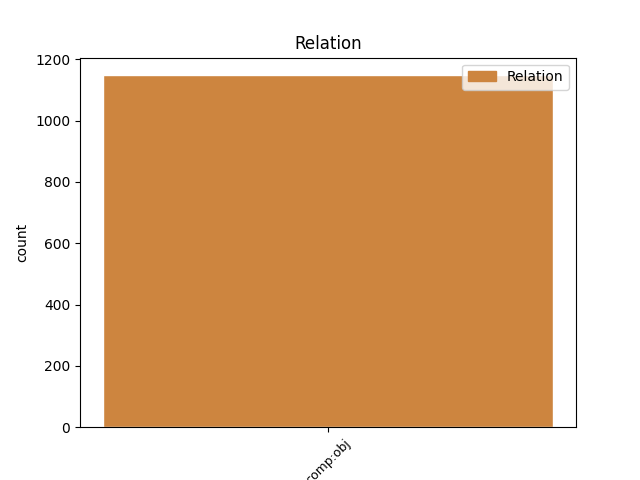
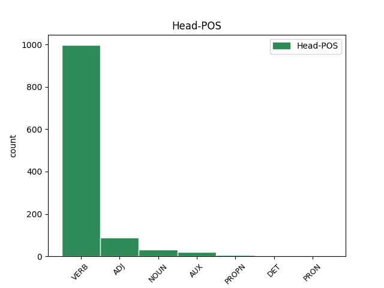
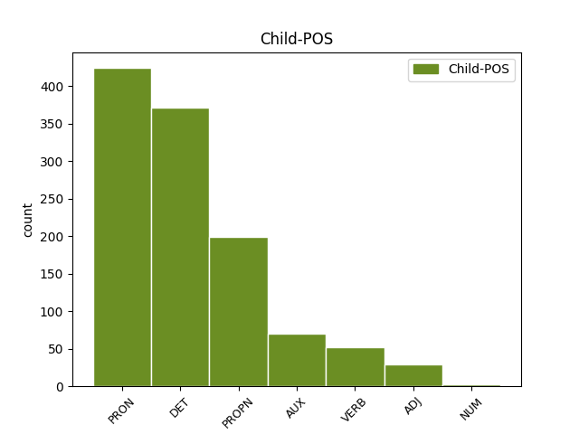

Distribution of features within this leaf



Agreement Rules sorted by frequency.
- When the dependent token is the direct object complements(comp:obj) of the head token, and the dependent token is PRON.
1 Samsonova _ _ _ _ 0 _ _ _
2 majka _ _ _ _ 0 _ _ _
3 Mara _ _ _ _ 0 _ _ _
4 je _ _ _ _ 0 _ _ _
5 neplodna _ _ _ _ 0 _ _ _
6 i _ _ _ _ 0 _ _ _
7 već _ _ _ _ 0 _ _ _
8 je _ _ _ _ 0 _ _ _
9 izgubila _ _ _ _ 0 _ _ _
10 nadu _ _ _ _ 0 _ _ _
11 da _ _ _ _ 0 _ _ _
12 će _ _ _ _ 0 _ _ _
13 ikada _ _ _ _ 0 _ _ _
14 imati _ _ _ _ 0 _ _ _
15 djece _ _ _ _ 0 _ _ _
16 kada _ _ _ _ 0 _ _ _
17 joj on PRON Pp3fsd Case=Dat|Gender=Fem|Number=Sing|Person=3|PronType=Prs 19 comp:obj _ _
18 se _ _ _ _ 0 _ _ _
19 ukaže ukazati VERB Vmr3s Mood=Ind|Number=Sing|Person=3|Tense=Pres|VerbForm=Fin 0 _ _ _
20 tajanstveni _ _ _ _ 0 _ _ _
21 stranac _ _ _ _ 0 _ _ _
22 i _ _ _ _ 0 _ _ _
23 prorekne _ _ _ _ 0 _ _ _
24 da _ _ _ _ 0 _ _ _
25 će _ _ _ _ 0 _ _ _
26 roditi _ _ _ _ 0 _ _ _
27 sina _ _ _ _ 0 _ _ _
28 koji _ _ _ _ 0 _ _ _
29 će _ _ _ _ 0 _ _ _
30 spasiti _ _ _ _ 0 _ _ _
31 svoj _ _ _ _ 0 _ _ _
32 narod _ _ _ _ 0 _ _ _
33 iz _ _ _ _ 0 _ _ _
34 filistejskog _ _ _ _ 0 _ _ _
35 ropstva _ _ _ _ 0 _ _ _
36 . _ _ _ _ 0 _ _ _
1 Projekt _ _ _ _ 0 _ _ _
2 izuzetno _ _ _ _ 0 _ _ _
3 vodi _ _ _ _ 0 _ _ _
4 računa _ _ _ _ 0 _ _ _
5 o _ _ _ _ 0 _ _ _
6 mjerilu _ _ _ _ 0 _ _ _
7 i _ _ _ _ 0 _ _ _
8 važnosti _ _ _ _ 0 _ _ _
9 grada _ _ _ _ 0 _ _ _
10 , _ _ _ _ 0 _ _ _
11 kojeg koji DET Pi-msay Animacy=Anim|Case=Acc|Gender=Masc|Number=Sing|PronType=Int,Rel 14 comp:obj _ _
12 više _ _ _ _ 0 _ _ _
13 ne _ _ _ _ 0 _ _ _
14 promatra promatrati VERB Vmr3s Mood=Ind|Number=Sing|Person=3|Tense=Pres|VerbForm=Fin 0 _ _ _
15 kao _ _ _ _ 0 _ _ _
16 zatvorenu _ _ _ _ 0 _ _ _
17 i _ _ _ _ 0 _ _ _
18 arhiviranu _ _ _ _ 0 _ _ _
19 cjelinu _ _ _ _ 0 _ _ _
20 grada-muzeja _ _ _ _ 0 _ _ _
21 , _ _ _ _ 0 _ _ _
22 već _ _ _ _ 0 _ _ _
23 promišlja _ _ _ _ 0 _ _ _
24 koncept _ _ _ _ 0 _ _ _
25 muzeja _ _ _ _ 0 _ _ _
26 u _ _ _ _ 0 _ _ _
27 gradu _ _ _ _ 0 _ _ _
28 te _ _ _ _ 0 _ _ _
29 afirmira _ _ _ _ 0 _ _ _
30 grad _ _ _ _ 0 _ _ _
31 izvan _ _ _ _ 0 _ _ _
32 grada _ _ _ _ 0 _ _ _
33 . _ _ _ _ 0 _ _ _
1 Nakon _ _ _ _ 0 _ _ _
2 tri _ _ _ _ 0 _ _ _
3 uzastopne _ _ _ _ 0 _ _ _
4 pobjede _ _ _ _ 0 _ _ _
5 , _ _ _ _ 0 _ _ _
6 Ivan _ _ _ _ 0 _ _ _
7 Pokos _ _ _ _ 0 _ _ _
8 morao _ _ _ _ 0 _ _ _
9 se _ _ _ _ 0 _ _ _
10 zadovoljiti _ _ _ _ 0 _ _ _
11 i _ _ _ _ 0 _ _ _
12 drugim _ _ _ _ 0 _ _ _
13 mjestom _ _ _ _ 0 _ _ _
14 , _ _ _ _ 0 _ _ _
15 dok _ _ _ _ 0 _ _ _
16 je _ _ _ _ 0 _ _ _
17 pobjeda _ _ _ _ 0 _ _ _
18 otišla otići VERB Vmp-sf Gender=Fem|Number=Sing|Tense=Past|VerbForm=Part|Voice=Act 0 _ _ _
19 u _ _ _ _ 0 _ _ _
20 Split _ _ _ _ 0 _ _ _
21 , _ _ _ _ 0 _ _ _
22 Martinu Martin PROPN Npmsd Case=Dat|Gender=Masc|Number=Sing 18 comp:obj _ _
23 Bradariću _ _ _ _ 0 _ _ _
24 . _ _ _ _ 0 _ _ _
1 No _ _ _ _ 0 _ _ _
2 , _ _ _ _ 0 _ _ _
3 obzirom obzir NOUN Ncmsi Case=Ins|Gender=Masc|Number=Sing 0 _ _ _
4 da _ _ _ _ 0 _ _ _
5 je biti AUX Var3s Mood=Ind|Number=Sing|Person=3|Tense=Pres|VerbForm=Fin 3 comp:obj _ _
6 ona _ _ _ _ 0 _ _ _
7 već _ _ _ _ 0 _ _ _
8 na _ _ _ _ 0 _ _ _
9 funkciji _ _ _ _ 0 _ _ _
10 predsjednice _ _ _ _ 0 _ _ _
11 GO-a _ _ _ _ 0 _ _ _
12 , _ _ _ _ 0 _ _ _
13 za _ _ _ _ 0 _ _ _
14 kandidaturu _ _ _ _ 0 _ _ _
15 za _ _ _ _ 0 _ _ _
16 mjesto _ _ _ _ 0 _ _ _
17 županijske _ _ _ _ 0 _ _ _
18 čelnice _ _ _ _ 0 _ _ _
19 morat _ _ _ _ 0 _ _ _
20 će _ _ _ _ 0 _ _ _
21 podnijeti _ _ _ _ 0 _ _ _
22 ostavku _ _ _ _ 0 _ _ _
23 , _ _ _ _ 0 _ _ _
24 pa _ _ _ _ 0 _ _ _
25 će _ _ _ _ 0 _ _ _
26 stoga _ _ _ _ 0 _ _ _
27 zadarski _ _ _ _ 0 _ _ _
28 HNS _ _ _ _ 0 _ _ _
29 morati _ _ _ _ 0 _ _ _
30 izabrati _ _ _ _ 0 _ _ _
31 i _ _ _ _ 0 _ _ _
32 novog _ _ _ _ 0 _ _ _
33 čelnika _ _ _ _ 0 _ _ _
34 Gradske _ _ _ _ 0 _ _ _
35 organizacije _ _ _ _ 0 _ _ _
36 . _ _ _ _ 0 _ _ _
1 Da _ _ _ _ 0 _ _ _
2 biste _ _ _ _ 0 _ _ _
3 otkrili otkriti VERB Vmp-pm Gender=Masc|Number=Plur|Tense=Past|VerbForm=Part|Voice=Act 0 _ _ _
4 što _ _ _ _ 0 _ _ _
5 trebate trebati VERB Vmr2p Mood=Ind|Number=Plur|Person=2|Tense=Pres|VerbForm=Fin 3 comp:obj _ _
6 promijeniti _ _ _ _ 0 _ _ _
7 u _ _ _ _ 0 _ _ _
8 ponašanju _ _ _ _ 0 _ _ _
9 , _ _ _ _ 0 _ _ _
10 mogu _ _ _ _ 0 _ _ _
11 vas _ _ _ _ 0 _ _ _
12 inspirirati _ _ _ _ 0 _ _ _
13 drugi _ _ _ _ 0 _ _ _
14 ljudi _ _ _ _ 0 _ _ _
15 . _ _ _ _ 0 _ _ _
1 Moje _ _ _ _ 0 _ _ _
2 je _ _ _ _ 0 _ _ _
3 mišljenje _ _ _ _ 0 _ _ _
4 da _ _ _ _ 0 _ _ _
5 je _ _ _ _ 0 _ _ _
6 u _ _ _ _ 0 _ _ _
7 današnje _ _ _ _ 0 _ _ _
8 vrijeme _ _ _ _ 0 _ _ _
9 govora _ _ _ _ 0 _ _ _
10 o _ _ _ _ 0 _ _ _
11 komunikaciji _ _ _ _ 0 _ _ _
12 , _ _ _ _ 0 _ _ _
13 u _ _ _ _ 0 _ _ _
14 kojoj _ _ _ _ 0 _ _ _
15 jedni _ _ _ _ 0 _ _ _
16 druge drugi ADJ Mlompa Case=Acc|Degree=Pos|Gender=Masc|Number=Plur 17 comp:obj _ _
17 učimo učiti VERB Vmr1p Mood=Ind|Number=Plur|Person=1|Tense=Pres|VerbForm=Fin 0 _ _ _
18 , _ _ _ _ 0 _ _ _
19 a _ _ _ _ 0 _ _ _
20 u _ _ _ _ 0 _ _ _
21 različitim _ _ _ _ 0 _ _ _
22 grupama _ _ _ _ 0 _ _ _
23 potpore _ _ _ _ 0 _ _ _
24 i _ _ _ _ 0 _ _ _
25 ohrabrujemo _ _ _ _ 0 _ _ _
26 kako _ _ _ _ 0 _ _ _
27 govoriti _ _ _ _ 0 _ _ _
28 o _ _ _ _ 0 _ _ _
29 vlastitim _ _ _ _ 0 _ _ _
30 osjećajima _ _ _ _ 0 _ _ _
31 i _ _ _ _ 0 _ _ _
32 « _ _ _ _ 0 _ _ _
33 stanjima _ _ _ _ 0 _ _ _
34 svijesti _ _ _ _ 0 _ _ _
35 » _ _ _ _ 0 _ _ _
36 , _ _ _ _ 0 _ _ _
37 poziv _ _ _ _ 0 _ _ _
38 na _ _ _ _ 0 _ _ _
39 kontemplaciju _ _ _ _ 0 _ _ _
40 veoma _ _ _ _ 0 _ _ _
41 aktualan _ _ _ _ 0 _ _ _
42 . _ _ _ _ 0 _ _ _
1 Država _ _ _ _ 0 _ _ _
2 , _ _ _ _ 0 _ _ _
3 stvar _ _ _ _ 0 _ _ _
4 zajednička _ _ _ _ 0 _ _ _
5 svima _ _ _ _ 0 _ _ _
6 , _ _ _ _ 0 _ _ _
7 kao _ _ _ _ 0 _ _ _
8 što _ _ _ _ 0 _ _ _
9 dobro _ _ _ _ 0 _ _ _
10 kaže _ _ _ _ 0 _ _ _
11 latinska _ _ _ _ 0 _ _ _
12 izreka _ _ _ _ 0 _ _ _
13 respublica _ _ _ _ 0 _ _ _
14 , _ _ _ _ 0 _ _ _
15 bit _ _ _ _ 0 _ _ _
16 će _ _ _ _ 0 _ _ _
17 dakle _ _ _ _ 0 _ _ _
18 neutralna _ _ _ _ 0 _ _ _
19 na _ _ _ _ 0 _ _ _
20 vjerskom _ _ _ _ 0 _ _ _
21 planu _ _ _ _ 0 _ _ _
22 : _ _ _ _ 0 _ _ _
23 neuter _ _ _ _ 0 _ _ _
24 , _ _ _ _ 0 _ _ _
25 također _ _ _ _ 0 _ _ _
26 na _ _ _ _ 0 _ _ _
27 latinskom _ _ _ _ 0 _ _ _
28 , _ _ _ _ 0 _ _ _
29 znači značiti VERB Vmr3s Mood=Ind|Number=Sing|Person=3|Tense=Pres|VerbForm=Fin 0 _ _ _
30 upravo _ _ _ _ 0 _ _ _
31 " _ _ _ _ 0 _ _ _
32 ni _ _ _ _ 0 _ _ _
33 jedan jedan NUM Mlcmsn Case=Nom|Gender=Masc|Number=Sing|NumType=Card 29 comp:obj _ _
34 ni _ _ _ _ 0 _ _ _
35 drugi _ _ _ _ 0 _ _ _
36 " _ _ _ _ 0 _ _ _
37 . _ _ _ _ 0 _ _ _
Disagree Examples:
1 " _ _ _ _ 0 _ _ _
2 Lagumdžija _ _ _ _ 0 _ _ _
3 i _ _ _ _ 0 _ _ _
4 Komšić _ _ _ _ 0 _ _ _
5 upropastili upropastiti VERB Vmp-pm Gender=Masc|Number=Plur|Tense=Past|VerbForm=Part|Voice=Act 0 _ _ _
6 su _ _ _ _ 0 _ _ _
7 SDP SDP PROPN Npmsan Animacy=Inan|Case=Acc|Gender=Masc|Number=Sing 5 comp:obj _ _
8 pretvorivši _ _ _ _ 0 _ _ _
9 ga _ _ _ _ 0 _ _ _
10 u _ _ _ _ 0 _ _ _
11 taoca _ _ _ _ 0 _ _ _
12 osobnih _ _ _ _ 0 _ _ _
13 političkih _ _ _ _ 0 _ _ _
14 ambicija _ _ _ _ 0 _ _ _
15 . _ _ _ _ 0 _ _ _
1 " _ _ _ _ 0 _ _ _
2 Potrebna potreban ADJ Agpfsny Case=Nom|Definite=Def|Degree=Pos|Gender=Fem|Number=Sing 0 _ _ _
3 nam mi PRON Pp1-pd Case=Dat|Number=Plur|Person=1|PronType=Prs 2 comp:obj _ _
4 je _ _ _ _ 0 _ _ _
5 ideja _ _ _ _ 0 _ _ _
6 da _ _ _ _ 0 _ _ _
7 ponovno _ _ _ _ 0 _ _ _
8 ujedinimo _ _ _ _ 0 _ _ _
9 društvo _ _ _ _ 0 _ _ _
10 , _ _ _ _ 0 _ _ _
11 da _ _ _ _ 0 _ _ _
12 ono _ _ _ _ 0 _ _ _
13 krene _ _ _ _ 0 _ _ _
14 naprijed _ _ _ _ 0 _ _ _
15 kao _ _ _ _ 0 _ _ _
16 cjelina _ _ _ _ 0 _ _ _
17 . _ _ _ _ 0 _ _ _
1 Kako _ _ _ _ 0 _ _ _
2 ste _ _ _ _ 0 _ _ _
3 to taj DET Pd-nsa Case=Acc|Gender=Neut|Number=Sing|PronType=Dem 4 comp:obj _ _
4 doživjeli doživjeti VERB Vmp-pm Gender=Masc|Number=Plur|Tense=Past|VerbForm=Part|Voice=Act 0 _ _ _
5 i _ _ _ _ 0 _ _ _
6 koliko _ _ _ _ 0 _ _ _
7 Makedonija _ _ _ _ 0 _ _ _
8 dobiva _ _ _ _ 0 _ _ _
9 svojim _ _ _ _ 0 _ _ _
10 doprinosom _ _ _ _ 0 _ _ _
11 tim _ _ _ _ 0 _ _ _
12 misijama _ _ _ _ 0 _ _ _
13 očuvanja _ _ _ _ 0 _ _ _
14 mira _ _ _ _ 0 _ _ _
15 ? _ _ _ _ 0 _ _ _
1 Makedonska _ _ _ _ 0 _ _ _
2 vojska _ _ _ _ 0 _ _ _
3 daje _ _ _ _ 0 _ _ _
4 mnogo _ _ _ _ 0 _ _ _
5 više _ _ _ _ 0 _ _ _
6 no _ _ _ _ 0 _ _ _
7 što _ _ _ _ 0 _ _ _
8 dobiva _ _ _ _ 0 _ _ _
9 u _ _ _ _ 0 _ _ _
10 takvim _ _ _ _ 0 _ _ _
11 aranžmanima _ _ _ _ 0 _ _ _
12 , _ _ _ _ 0 _ _ _
13 no _ _ _ _ 0 _ _ _
14 mi _ _ _ _ 0 _ _ _
15 smo _ _ _ _ 0 _ _ _
16 potpuno _ _ _ _ 0 _ _ _
17 svjesni svjestan ADJ Agpmpny Case=Nom|Definite=Def|Degree=Pos|Gender=Masc|Number=Plur 0 _ _ _
18 kako _ _ _ _ 0 _ _ _
19 je biti AUX Var3s Mood=Ind|Number=Sing|Person=3|Tense=Pres|VerbForm=Fin 17 comp:obj _ _
20 na _ _ _ _ 0 _ _ _
21 nama _ _ _ _ 0 _ _ _
22 dio _ _ _ _ 0 _ _ _
23 odgovornosti _ _ _ _ 0 _ _ _
24 i _ _ _ _ 0 _ _ _
25 spremni _ _ _ _ 0 _ _ _
26 smo _ _ _ _ 0 _ _ _
27 se _ _ _ _ 0 _ _ _
28 suočiti _ _ _ _ 0 _ _ _
29 s _ _ _ _ 0 _ _ _
30 takvim _ _ _ _ 0 _ _ _
31 izazovom _ _ _ _ 0 _ _ _
32 . _ _ _ _ 0 _ _ _
1 Siguran siguran ADJ Agpmsnn Case=Nom|Definite=Ind|Degree=Pos|Gender=Masc|Number=Sing 0 _ _ _
2 sam _ _ _ _ 0 _ _ _
3 kako _ _ _ _ 0 _ _ _
4 će htjeti AUX Var3p Mood=Ind|Number=Plur|Person=3|Tense=Pres|VerbForm=Fin 1 comp:obj _ _
5 se _ _ _ _ 0 _ _ _
6 reforme _ _ _ _ 0 _ _ _
7 intenzivirati _ _ _ _ 0 _ _ _
8 tijekom _ _ _ _ 0 _ _ _
9 sljedećih _ _ _ _ 0 _ _ _
10 nekoliko _ _ _ _ 0 _ _ _
11 mjeseci _ _ _ _ 0 _ _ _
12 . _ _ _ _ 0 _ _ _